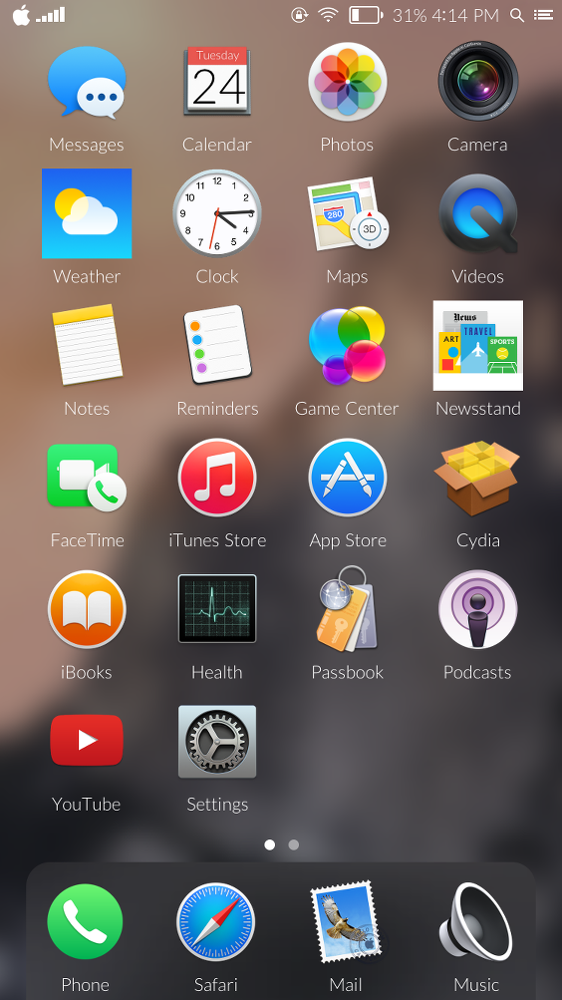

-
An OS X Yosemite theme for iOS 8. Apply with WinterBoard.
Does not require IconBundles.

All icons were created by and/or are property of Apple or their respective app developer unless stated otherwise.
Contributors:
Doney den Ouden - Messenger
-
Recent Changes
0.1 - initial release